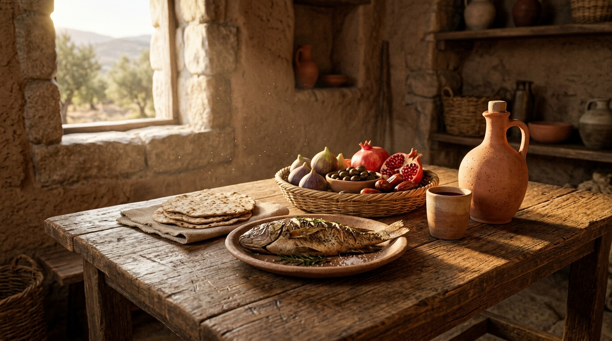

O Dia a Dia no Mundo Bíblico
A Bíblia é um livro profundamente enraizado na cultura do Oriente Médio antigo e, mais especificamente, na cultura judaica. Jesus, os apóstolos e os profetas viveram sob essas tradições. Entender seus costumes diários é a chave para desvendar parábolas, leis e atitudes que parecem estranhas aos nossos olhos ocidentais modernos.
Neste estudo:
👨👩👧👦 A Família e a Casa

A família era a base da sociedade. A estrutura era patriarcal e o lar (muitas vezes uma casa simples de pedra) era o centro da vida social e religiosa, onde se transmitiam as tradições e a fé de geração em geração.
💍 Casamento e Noivado

O casamento era um contrato social e religioso muito sério, frequentemente arranjado pelas famílias. Envolvia etapas como o noivado (betrothal), o pagamento do dote e a grande festa de celebração que durava vários dias.
🍎 Alimentação e Leis de Pureza

A dieta judaica era regida pelas leis de kashrut (kosher), que determinavam quais animais eram puros e como deveriam ser preparados. Além disso, havia rituais complexos de purificação antes das refeições e para objetos.
🕍 O Templo e a Sinagoga

O Templo em Jerusalém era o único lugar para sacrifícios e adoração central. Já a sinagoga local servia como centro de estudo da Torá, oração e comunidade para os judeus em todas as cidades.
🧶 Vestimentas e Costumes

As roupas eram feitas de lã ou linho, simples e funcionais. Costumes como usar franjas (tzitzit) nas bordas das vestes, phylacteries (tefilin) para oração e a hospitalidade para com estranhos eram marcantes na cultura.
✅ Resumo
Conhecer a cultura judaica nos ajuda a ler a Bíblia com os "óculos" corretos. Ela nos impede de impor nossa mentalidade ocidental moderna aos textos e nos permite compreender a profundidade das palavras e ações de Jesus e dos apóstolos.
🎥 Aprofunde seu estudo
Deseja visualizar como era a vida no primeiro século?
Assista a documentários e estudos sobre a cultura judaica.